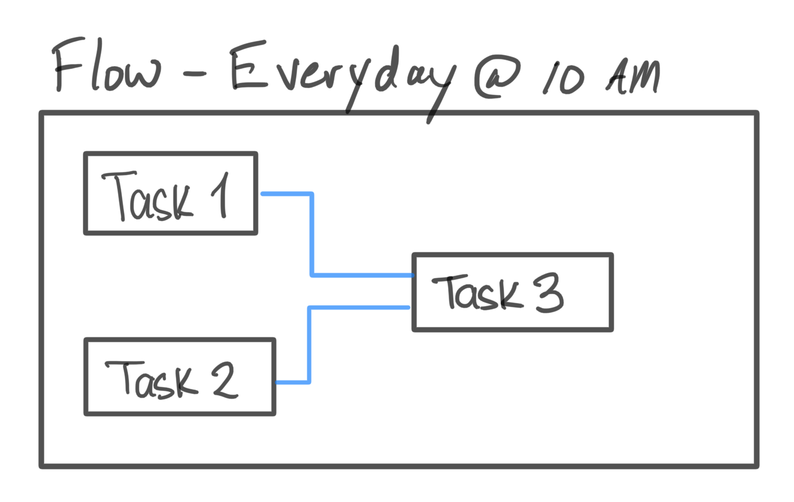
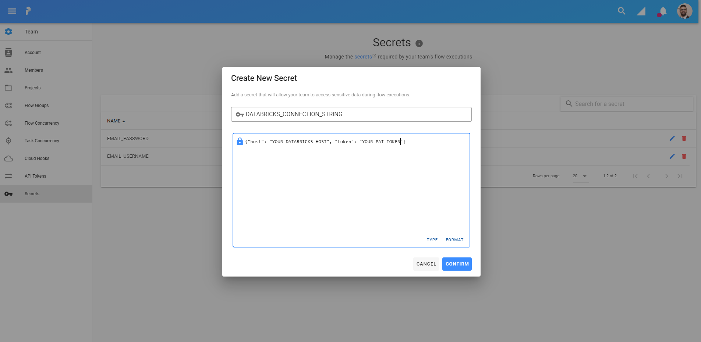
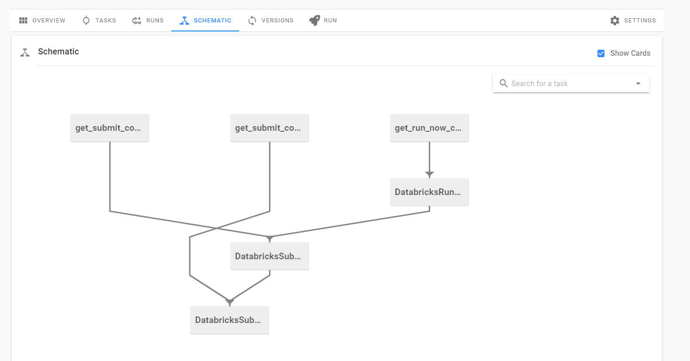

Prefect is a workflow management system that enables users to easily take data applications and add retries, logging, dynamic mapping, caching, failure notifications, scheduling and more — all with functional Python API. Prefect allows users to take their existing code and transform it into a DAG (Directed Acyclic Graph) with dependencies already identified [1]. It simplifies the creation of ETL pipelines and dependencies and enables users to strictly focus on the application code instead of the pipeline code (looking at you Airflow). Prefect can even create distributed pipelines to parallelize your data applications.
Databricks at its core is a PaaS (Platform as a Service) that delivers fully managed Spark clusters, interactive & collaborative notebooks (similar to Jupyter), a production pipeline scheduler and a platform for powering your Spark-based applications. It is integrated in both the Azure and AWS ecosystem to make working with big data simple. Databricks enables users to run their custom Spark applications on their managed Spark clusters. It even allows users to schedule their notebooks as Spark jobs. It has completely simplified big data development and the ETL process surrounding it.
Databricks has become such an integral big data ETL tool, one that I use every day at work, so I made a contribution to the Prefect project enabling users to integrate Databricks jobs with Prefect. In this tutorial we will go over just that — how you can incorporate running Databricks notebooks and Spark jobs in your Prefect flows.
Prerequisites
There is no prior knowledge needed for this post however a free Prefect account is recommended to implement the example. While this post will touch on Prefect basics, it is not an in depth Prefect tutorial.
Prefect Basics
Tasks
A task in Prefect is the equivalent of a step in your data pipeline. It is as simple as a Python function in your application or script. There are no restrictions on how simple or complex tasks can be. That being said, it’s best to follow coding best practices and develop your functions, so they only do one thing. Prefect themselves recommend this.
In general, we encourage small tasks over monolithic ones, each task should perform a discrete logical step of your workflow, but not more. 2
By keeping tasks small, you will get the most out of Prefect’s engine such as efficient state checkpoints.
Flows
A flow is what ties all your tasks and their dependencies together. It describes dependencies between tasks, their ordering and the data flow. Flows pull together tasks and make it into a pipeline rounding out your data application.

Native Databricks Integration in Prefect
I made a contribution to the Prefect project by the implementing the tasks DatabricksRunNow & DatabricksRunSubmit enabling seamless integration between Prefect and Databricks. Through these tasks users can externally trigger a defined Databricks job or a single run of a jar, Python script or notebook. Once a task has been executed it uses Databricks native API calls to run notebooks or Spark Jobs. When the task is running it will continue to poll the current status of the run until it’s completed. Once a task is completed it will allow for downstream tasks to run if it is successful.
Creating a Flow with Databricks Tasks
Before we get started writing any code, we have to create a Prefect Secret that is going to store our Databricks connection string. From your Prefect Cloud account, click on Team from the left side menu and go to the Secrets section. This section is where you manage all the secrets for your Prefect Flows.
To generate the Databricks connection string you will need the host name of your Databricks instance as well as a PAT for your Databricks account. To create a Databricks PAT, follow these steps from the Databricks documentation. The connection string has to be a valid JSON object. The title of the secret has to be DATABRICKS_CONNECTION_STRING.

Creating the Tasks
Let’s start our flow by defining some common tasks that we will need to run our Databricks notebooks and Spark jobs.
from prefect import task, Flow
from prefect.tasks.databricks.databricks_submitjob import (
DatabricksRunNow,
DatabricksSubmitRun,
)
from prefect.tasks.secrets.base import PrefectSecret
conn = PrefectSecret("DATABRICKS_CONNECTION_STRING")
# Initialize Databricks task class as a template
# We will then use the task function to pass in unique config options & params
RunNow = DatabricksRunNow(conn)
SubmitRun = DatabricksSubmitRun(conn)We define two task objects, RunNow and SubmitRun, to act as templates to run our Databricks jobs. We can reuse these same tasks with different configurations to easily create new Databricks jobs. Let’s create some helper tasks to dynamically create the configuration of our jobs.
@task
def get_submit_config(python_params: list):
"""
SubmitRun config template for the DatabricksSubmitRun task,
Spark Python Task params must be passed as a list.
"""
return {
"run_name": "MyDatabricksJob",
"new_cluster": {
"spark_version": "7.3.x-scala2.12",
"node_type_id": "r3.xlarge",
"aws_attributes": {
"availability": "ON_DEMAND"
},
"num_workers": 10
},
"spark_python_task": {
"python_file": "/Users/ashton/databricks_task/main.py",
"parameters": python_params,
},
}
@task
def get_run_now_config(notebook_params: dict):
"""
RunNow config template for the DatabricksSubmitRun task,
Notebook Task params must be passed as a dictionary.
"""
return {"job_id": 42, "notebook_params": notebook_params}The get_submit_config task allows us to dynamically pass parameters to a Python script that is on DBFS (Databricks File System) and return a configuration to run a single use Databricks job. You can add more flexibility by creating more parameters that map to configuration options in your Databricks job configuration. The get_run_now_config executes same task except it returns a configuration for the DatabricksRunNow task to run a preconfigured Databricks Notebooks job. The schemas of both the get_run_now_config and get_submit_config match the Run Now and Runs Submit API respectively.
Python file parameters must be passed as a list and Notebook parameters must be passed as a dictionary.
Now let’s create a flow that can run our tasks.
Creating the Flow
We’re going to create a flow that runs a preconfigured notebook job on Databricks, followed by two subsequent Python script jobs.
with Flow("Databricks-Tasks", schedule=None) as flow:
run_now_config = get_run_now_config({"param1": "value"})
submit_config_a = get_submit_config(["param1"])
submit_config_b = get_submit_config(["param2"])
run_now_task = RunNow(json=run_now_config)
submit_task_a = SubmitRun(json=submit_config_a)
submit_task_b = SubmitRun(json=submit_config_b)
# Since Databricks tasks don't return any data dependencies we can leverage,
# we have to define the dependencies between Databricks tasks themselves
flow.add_edge(run_now_task, submit_task_a)
flow.add_edge(submit_task_a, submit_task_b)We first need to create the Databricks job configuration by using our get_run_now_config and get_submit_config tasks. Pass the run now configuration to the RunNow task and the submit run configuration to the SubmitRun task through the json argument. The json parameter takes in a dictionary that matches the Run Now and Submit Run APIs mentioned above. To run more Databricks jobs we instantiate either the RunNow or SubmitRun templates we created and pass in a new json job config.
One of the awesome features of a Prefect flow is that it automatically builds a DAG from your tasks. It looks at task inputs as data dependencies and from that, can infer what tasks need to be completed before other tasks can run. For example, since our run_now_task has the input run_now_config, the flow builds the DAG knowing the get_run_now_config task has to run before the run_now_task.
Some tasks don’t return data that can be used as inputs in down stream tasks. For example, the Databricks tasks only return a job ID. We can still define the inter-task dependencies of the flow by using the .add_edge function. This will add dependencies between tasks that aren’t used as inputs for further down stream tasks. For example, flow.add_edge(run_now_task, submit_task_a) says that submit_task_a is a downstream task from the run_now_task and that submit_task_a cannot run until the run_now_task has been completed. By adding the edges to the remaining Databricks task we get our final flow, which you can also view in the Prefect schematics tab.

To the run the flow, we call the .run() method of our flow object — flow.run(). The final flow then looks like this:
from prefect import task, Flow
from prefect.tasks.databricks.databricks_submitjob import (
DatabricksRunNow,
DatabricksSubmitRun,
)
from prefect.tasks.secrets.base import PrefectSecret
@task
def get_submit_config(python_params: list):
"""
SubmitRun config template for the DatabricksSubmitRun task,
Spark Python Task params must be passed as a list.
"""
return {
"run_name": "MyDatabricksJob",
"new_cluster": {
"spark_version": "7.3.x-scala2.12",
"node_type_id": "r3.xlarge",
"aws_attributes": {
"availability": "ON_DEMAND"
},
"num_workers": 10
},
"spark_python_task": {
"python_file": "/Users/ashton/databricks_task/main.py",
"parameters": python_params,
},
}
@task
def get_run_now_config(notebook_params: dict):
"""
RunNow config template for the DatabricksSubmitRun task,
Notebook Task params must be passed as a dictionary.
"""
return {"job_id": 42, "notebook_params": notebook_params}
conn = PrefectSecret("DATABRICKS_CONNECTION_STRING")
# Initialize Databricks task class as a template
# We will then use the task function to pass in unique config options & params
RunNow = DatabricksRunNow(conn)
SubmitRun = DatabricksSubmitRun(conn)
with Flow("Databricks-Tasks", schedule=None) as flow:
run_now_config = get_run_now_config({"param1": "value"})
submit_config_a = get_submit_config(["param1"])
submit_config_b = get_submit_config(["param2"])
run_now_task = RunNow(json=run_now_config)
submit_task_a = SubmitRun(json=submit_config_a)
submit_task_b = SubmitRun(json=submit_config_b)
# Since Databricks tasks don't return any data dependencies we can leverage,
# we have to define the dependencies between Databricks tasks themselves
flow.add_edge(run_now_task, submit_task_a)
flow.add_edge(submit_task_a, submit_task_b)
flow.run()
# flow.register("YOUR_PROJECT") to register your flow on the UIConclusion
You now have all the knowledge you need to run Databricks Notebooks and Spark jobs as part of your ETL flows. For more information on Prefect and Databricks jobs, I recommend reading their documentation found here and here.
Feedback
As always, I encourage any feedback about my post. You can e-mail me at sidhuashton@gmail.com or leave a comment on the post if you have any questions or need any help.
You can also reach me and follow me on Twitter at @ashtonasidhu.
References
https://docs.prefect.io/core/, Prefect Documentation
https://docs.prefect.io/core/getting_started/first-steps.html, Prefect Getting Started